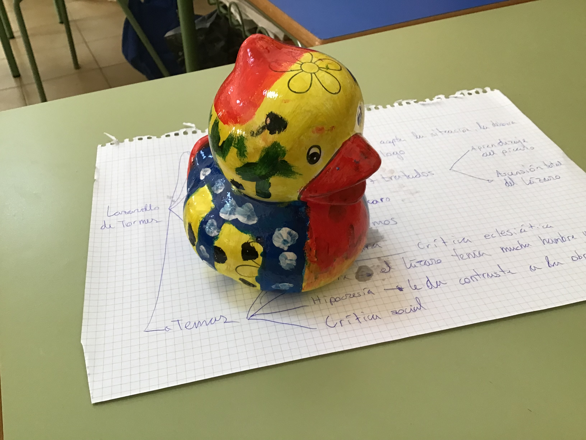

|  |
| En esta foto enseño a un pato pitntado por mí que fué vendido para recaudar dinero para Nicaragüa. A lo largo de las clases de plática en el colegio fuí pintandolo para que quede bonito, primero lo pinté entero de amarillo, luego le hice los tonos ronjos y naranjas, le puse tonos azules con puntos blancos y puntos negros. Todo eso en 3 días que nos dieron para pintarlo aparte de que había que hacer un informe digital donde explicas lo que usaste y como lo hiciste. Y el último día se ponía en barniz àra que quede bonito y brillante. Venderlo fué una de la mejores partes porque se trataba de socializar con la gente para que compren las basijas y recaudar el dicho dinero. |